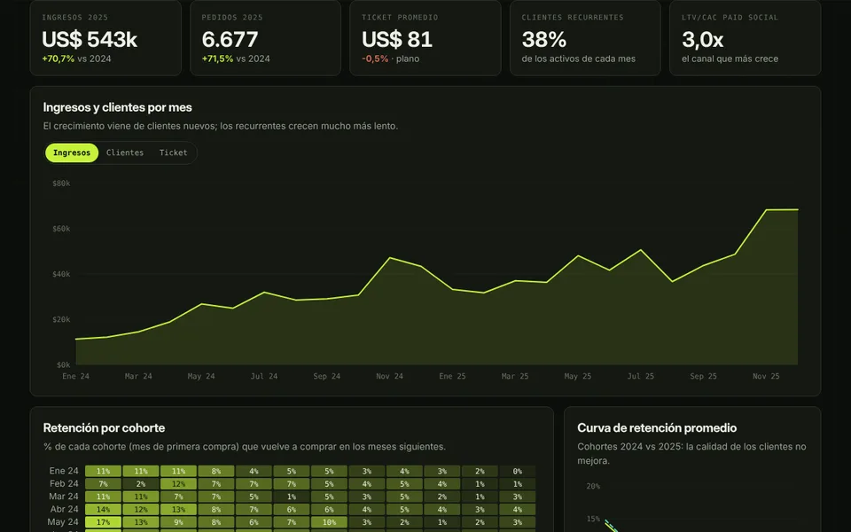

01Data Analyst · E-commerce
[[Clientes, cohortes y LTV/CAC¦Customers, cohorts & LTV/CAC]]
[[¿La tienda crece de forma sana? Retención por cohorte, valor de cada cliente según el canal que lo trajo y segmentación RFM.¦Is the store growing in a healthy way? Cohort retention, customer value by acquisition channel, and RFM segmentation.]]
3,0x[[LTV/CAC del canal que más crece (Paid Social): justo en el límite sano.¦LTV/CAC of the fastest-growing channel (Paid Social): right at the healthy limit.]]